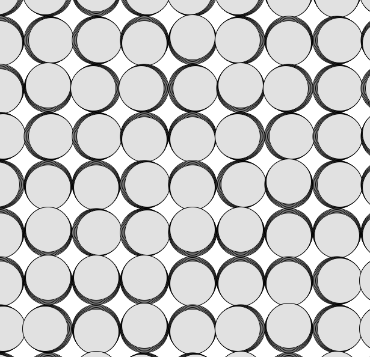

Experiment 3 - Generative Methods
Imitate
To develop artistic creativity in coding, it can be helpful to start by studying and learning from existing examples. This might involve reviewing code written by others, analyzing successful techniques, or even copying and modifying code to better understand how it works. By imitating and learning from existing techniques and strategies, we can gain a better understanding of what has been done before and what is possible, and identify opportunities for improvement and innovation.
What code did you start with? (You don't need to provide the code itself, but where did you start?) Document this step briefly.
A: At first I started with code from the piece "P_2_1_5_03", I really like the minimalstic features of this piece and the type of art it was able to generate. It was satisfying to see the shapes come out so staright and watch colors blend together when they're layered. When playing around with this piece I was adjusting the height and depth of the colors and shapes to understand how the coe affected what those looked like when you tried to draw. It was really cool to better understand how it affected the art generated to change those settings.
Integrate
After learning from existing techniques and strategies, we can build upon that foundation by combining elements from different sources. This might involve combining elements from different programming languages, using libraries or frameworks in new ways, or bringing together techniques from different fields or disciplines. By integrating and combining elements from different sources, we can create something new and unique.
How did you extend the code or combine with another technique to make something new? Document this step.
A: When thinking of what to combine or add to the code for the piece I was already inspired by I found myself very interested in the animation for "P_2_0_02". I really liked the concept of the grid and how it affected the shapes in the piece so I tried playing around a expirementing with some help from AI to see how I could blend the ability to draw with the grid feature from the second piece. I ended up with two very interesting art works that still stayed pretty true to the original pieces with some added or stripped features from expirementing.
Innovate
Finally, we can introduce new or original ideas to our coding process by thinking creatively and pushing the boundaries. This might involve developing entirely new techniques or approaches, or using existing techniques in new and creative ways. By innovating and introducing new ideas, we can create art that is truly groundbreaking.
How did you use the code as a jumping off point to create something truly unique and novel? Document this step thoroughly.
Through these generative art pieces I thought it would be fun to create something that had a more random element compared to the original piece I was inpired by. When continuing to expirement I ended up really like the grid feature and the idea of it blended with the lines. I tried to keep both of these and also decided to add shape elements to create a unique exprience for users when they choose to draw compared to when they are not drawing anymore. I think this add some more enjoyment from the piece when it is being interacted with since after you are done drawing the art is fairly simple.
Reflection
Each person that worked on the code should reflect on the process, the difficulties, and the successes of the experiment. Here's where you can put your reflections.
- What part of the project you contributed
- A reflection on your work and the work of the team
- Brief highs and lows
A: I worked individually for this project but I felt a bit more inspired from what we learned in class and also not putting too much pressure on myself this time to think of something really extravagant to make. I too more time to really understand how things worked and even though initally it was really difficult to figure out how I could blend 2 pieces it ended up being a very cool experience to see how it changed the art.